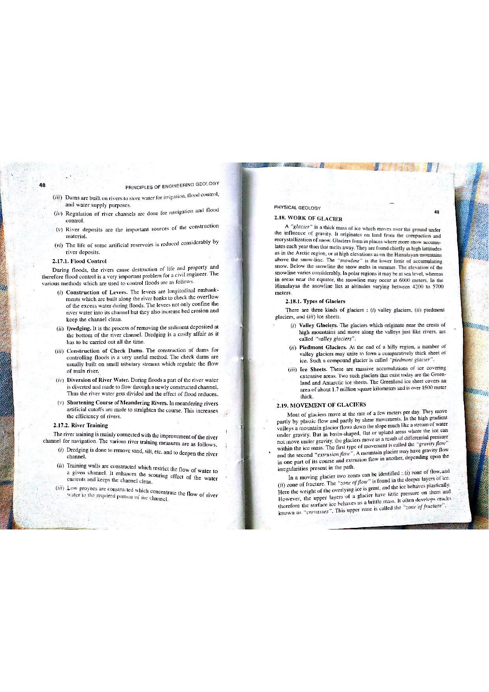

Q143: Storativity Spectrum: Confined vs Semi-Confined vs Unconfined Aquifers
In hydrogeology and groundwater hydraulics, the Storage Coefficient (or Storativity, denoted by the dimensionless parameter $S$) defines the volumetric capacity of an aquifer to release or absorb water in response to hydraulic head changes (Todd & Mays, 2005; Fetter, 2001; Bangar, p. 30).
Storativity is defined as the volume of water ($\Delta V_w$) that an aquifer releases from or takes into storage per unit horizontal surface area ($A$) of the aquifer per unit change in the component of hydraulic head ($\Delta h$) normal to that surface: $$S = \frac{\Delta V_w}{A \cdot \Delta h} \quad \left[\frac{\text{m}^3}{\text{m}^2 \cdot \text{m}} = \text{dimensionless}\right]$$
The physical mechanisms governing water release diverge radically between confined, semi-confined (leaky), and unconfined aquifers, producing storage coefficients that span over four to five orders of magnitude.

1. Confined (Artesian) Aquifers: Elastic Storage Mechanics
In a confined aquifer, the saturated permeable formation is bounded above and below by impermeable confining layers (aquicludes). The piezometric head rises above the top confining boundary, keeping all pores completely saturated at all times ($\Delta h$ does not dewater any pore space). When hydraulic head drops during pumping:
- Pore water pressure decreases, which increases the effective stress ($\sigma' = \sigma - u$) supported by the mineral skeleton, compressing the aquifer skeleton vertically (governed by soil compressibility $\alpha$).
- The reduction in pore water pressure allows the compressed water molecules to expand elastically (governed by water compressibility $\beta = 4.4 \times 10^{-10}\text{ Pa}^{-1}$).
The storage coefficient is the product of Specific Storage ($S_s$) and aquifer saturated thickness ($b$):
Because both mineral compressibility $\alpha$ and water compressibility $\beta$ are remarkably small, the resulting storage coefficient of a confined aquifer is extraordinarily small:

2. Semi-Confined (Leaky) Aquifers: Delayed Matrix Transfer
In a semi-confined (or leaky artesian) aquifer, the permeable formation is bounded by one or more semi-pervious layers (aquitards, such as silty clays or fractured shales). Under pumping:
- Initial water yield is supplied by elastic decompression of the confined aquifer skeleton and water ($S_s \cdot b \sim 10^{-4}$).
- As the cone of depression deepens, vertical hydraulic gradients across the aquitards induce significant downward or upward vertical leakage ($q_v = K' \frac{\Delta h'}{b'}$).
- Furthermore, the aquitards themselves undergo compaction and release internal pore water (delayed yield / storativity of the aquitard $S_s' b'$).
Consequently, the apparent or effective storage coefficient of a semi-confined aquifer observed over pumping durations lies in an intermediate range:
3. Unconfined (Water-Table) Aquifers: Gravity Drainage and Specific Yield
In an unconfined (phreatic) aquifer, the upper boundary is the free atmospheric water table. When pumping lowers the water table, pore space is physically vacated by water draining downward under the pull of gravity:
- The volume of water released per unit area per unit decline in water table is dominated by Specific Yield ($S_y$), representing gravity drainage.
- A small fraction of water remains bound to the mineral grains by surface tension and capillary forces, termed Specific Retention ($S_r$).
- The total storativity of an unconfined aquifer is: $$S_{\text{unconfined}} = S_y + S_s \cdot b \approx S_y$$
Since total porosity $n = S_y + S_r$, specific yield values for sands and gravels range between 5% and 35%:
Comparing the quantitative values across the three hydrogeologic regimes establishes an absolute and invariant order of increasing magnitude:
Therefore, arranging the aquifers in order of increasing storage coefficient value produces the exact sequence:
Confined Aquifer ⟶ Semi-confined Aquifer ⟶ Unconfined Aquifer
Option (A) lists the aquifers in order of strictly decreasing storativity ($0.20 \rightarrow 10^{-2} \rightarrow 10^{-4}$), exactly the reverse of what the question asks. Unconfined aquifers possess the largest storage coefficient ($S_y \approx 0.05 - 0.30$) due to physical dewatering of void spaces, whereas confined aquifers possess the smallest ($S \approx 10^{-5} - 10^{-3}$) because release is restricted to elastic mineral-water compressibility. Therefore, Option (A) is completely inverted.
Option (B) erroneously asserts that a semi-confined (leaky) aquifer has a smaller storage coefficient than a purely confined aquifer. In reality, semi-confined formations exhibit an apparent storativity ($10^{-3} - 10^{-1}$) that is one to three orders of magnitude greater than confined aquifers ($10^{-5} - 10^{-3}$) because the leaky confining beds release additional water through cross-formational leakage and delayed drainage. Confined must always precede semi-confined in an increasing sequence.
Option (C) reflects the exact, hydrogeologically verified hierarchy of storage coefficients across natural porous media:
- Confined Aquifer: $S = S_s \cdot b = 10^{-5} \text{ to } 10^{-3}$ (dominated by tiny elastic deformation $\rho_w g(\alpha + n\beta)b$).
- Semi-confined Aquifer: $S \approx 10^{-3} \text{ to } 10^{-1}$ (augmented by vertical aquitard leakage and delayed yield).
- Unconfined Aquifer: $S \approx S_y = 0.05 \text{ to } 0.35$ (dominated by massive physical gravity dewatering of pore channels).
Because $10^{-5} < 10^{-2} < 0.20$, Option (C) is unambiguously the correct arrangement in order of increasing storativity.
Option (D) incorrectly places the unconfined aquifer before the semi-confined aquifer. This would imply that $S_{\text{unconfined}} < S_{\text{semi-confined}}$, which is physically absurd: unconfined gravity drainage yields $50\text{ to }300\text{ liters of water per cubic meter of aquifer decline}$ ($S_y \approx 0.05 - 0.30$), whereas semi-confined leakage typically releases $1\text{ to }100\text{ liters per cubic meter}$ ($S \approx 0.001 - 0.10$). Placing unconfined in the intermediate position violates physical principles.
| Aquifer Regime | Typical Storativity ($S$) Range | Primary Release Mechanism | Upper Boundary Condition | Rate of Cone Propagation |
|---|---|---|---|---|
| Confined (Artesian) | $10^{-5} - 10^{-3}$ ($\sim 10^{-4}$) | Elastic matrix compaction ($\alpha$) + water decompression ($\beta$) | Impermeable aquiclude (Piezometric surface above roof) | Extremely rapid ($r \propto \sqrt{Tt/S}$, expands kilometers in hours) |
| Semi-Confined (Leaky) | $10^{-3} - 10^{-1}$ | Elastic decompression + cross-formational aquitard leakage & drainage | Semi-pervious aquitard (Silt, shale, sandy clay) | Intermediate (Cone growth slowed as aquitard leakage replenishes flow) |
| Unconfined (Water-Table) | $0.05 - 0.35$ ($5\% - 35\%$) | True gravity drainage of pore throats ($S_y \gg S_s \cdot b$) | Free phreatic water table under atmospheric pressure | Slow and localized (Massive water yield dampens radial propagation) |
A confined sandstone aquifer has a saturated thickness of $b = 30\text{ m}$, porosity $n = 0.25$, compressibility of the skeletal matrix $\alpha = 1.8 \times 10^{-8}\text{ Pa}^{-1}$, and water compressibility $\beta = 4.4 \times 10^{-10}\text{ Pa}^{-1}$. Taking water density $\rho_w = 1000\text{ kg/m}^3$ and $g = 9.81\text{ m/s}^2$, calculate: (a) Specific storage ($S_s$), and (b) Storage coefficient ($S$).
1. Compute effective compressibility term: $$(\alpha + n \beta) = 1.8 \times 10^{-8} + 0.25 \times (4.4 \times 10^{-10}) = 1.8 \times 10^{-8} + 1.1 \times 10^{-10} = 1.811 \times 10^{-8}\text{ Pa}^{-1}$$ 2. Specific storage: $$S_s = \rho_w g (\alpha + n \beta) = 1000 \times 9.81 \times (1.811 \times 10^{-8}) = 1.7766 \times 10^{-4}\text{ m}^{-1}$$ 3. Aquifer storativity: $$S = S_s \cdot b = 1.7766 \times 10^{-4}\text{ m}^{-1} \times 30\text{ m} = 5.33 \times 10^{-3}$$ Notice: Matrix compressibility ($\alpha$) accounts for over $99.4\%$ of the total elastic storage, while water decompression ($\beta$) contributes under $0.6\%$.
A groundwater basin has a plan surface area of $A = 25\text{ km}^2$. Under heavy drought abstraction, the hydraulic head drops uniformly by $\Delta h = 4.0\text{ m}$. Calculate the total volume of water released if the basin is: (a) a confined aquifer with $S = 2.5 \times 10^{-4}$, and (b) an unconfined aquifer with specific yield $S_y = 0.20$.
1. Basin surface area: $$A = 25\text{ km}^2 = 25 \times 10^6\text{ m}^2$$ 2. Confined aquifer release ($\Delta V_c$): $$\Delta V_c = S \cdot A \cdot \Delta h = (2.5 \times 10^{-4}) \times (25 \times 10^6\text{ m}^2) \times 4.0\text{ m} = 25,000\text{ m}^3$$ 3. Unconfined aquifer release ($\Delta V_u$): $$\Delta V_u = S_y \cdot A \cdot \Delta h = 0.20 \times (25 \times 10^6\text{ m}^2) \times 4.0\text{ m} = 20,000,000\text{ m}^3$$ 4. Comparison ratio: $$\frac{\Delta V_u}{\Delta V_c} = \frac{20,000,000}{25,000} = 800\text{ times}$$ Physical Insight: For the exact same head drop, the unconfined aquifer yields 800 times more water than the confined aquifer because pore space is directly drained by gravity.
An undisturbed alluvial silt-sand core from an unconfined aquifer has a total porosity of $n = 32\%$. Laboratory column drainage tests reveal that after 48 hours of gravity dewatering, the volumetric moisture content retained against gravity is $\theta_r = 13.5\%$. Determine: (a) Specific Retention ($S_r$), and (b) Specific Yield ($S_y$).
1. Specific Retention represents the moisture retained against gravity under capillary forces: $$S_r = \theta_r = 0.135 \quad (13.5\%)$$ 2. Fundamental volumetric phase relationship: $$n = S_y + S_r \implies S_y = n - S_r$$ $$S_y = 0.320 - 0.135 = 0.185 \quad (18.5\%)$$ The unconfined aquifer has an effective storativity of $S = S_y = 0.185$.
Using the Cooper-Jacob dimensionless time criterion $u = \frac{r^2 S}{4 T t} = 0.01$, compare the radius of the cone of depression ($r$) after $t = 12\text{ hours}$ of pumping between: (a) a confined aquifer with $T = 500\text{ m}^2/\text{day}$ and $S = 2 \times 10^{-4}$, and (b) an unconfined aquifer with $T = 500\text{ m}^2/\text{day}$ and $S_y = 0.20$.
1. Rearranging for radial distance $r$: $$r = \sqrt{\frac{4 T t \cdot u}{S}} = \sqrt{\frac{4 \times 500\text{ m}^2/\text{day} \times 0.5\text{ days} \times 0.01}{S}} = \sqrt{\frac{10}{S}}$$ 2. Confined aquifer ($S = 2 \times 10^{-4}$): $$r_{\text{confined}} = \sqrt{\frac{10}{2 \times 10^{-4}}} = \sqrt{50,000} \approx 223.6\text{ meters}$$ 3. Unconfined aquifer ($S = 0.20$): $$r_{\text{unconfined}} = \sqrt{\frac{10}{0.20}} = \sqrt{50} \approx 7.07\text{ meters}$$ 4. Ratio: $$\frac{r_{\text{confined}}}{r_{\text{unconfined}}} = \sqrt{\frac{0.20}{2 \times 10^{-4}}} = \sqrt{1000} \approx 31.62$$ Conclusion: Because $r \propto 1/\sqrt{S}$, the cone of depression expands over 31 times farther radially in the confined aquifer during the same 12-hour period.
A thick confined clayey silt aquitard has a thickness of $b = 40\text{ m}$ and matrix compressibility $\alpha = 3.5 \times 10^{-7}\text{ Pa}^{-1}$. Excessive industrial groundwater extraction over 5 years causes a piezometric head drop of $\Delta h = 18\text{ m}$. Assuming 100% consolidation under effective stress change $\Delta \sigma' = \rho_w g \Delta h$, calculate the total vertical land subsidence ($\Delta b$).
1. Effective stress increase: $$\Delta \sigma' = \rho_w g \Delta h = 1000\text{ kg/m}^3 \times 9.81\text{ m/s}^2 \times 18\text{ m} = 176,580\text{ Pa} \approx 176.6\text{ kPa}$$ 2. Total compaction of the skeletal layer: $$\Delta b = \alpha \cdot b \cdot \Delta \sigma' = (3.5 \times 10^{-7}\text{ Pa}^{-1}) \times 40\text{ m} \times 176,580\text{ Pa} = 2.472\text{ meters}$$ Significance: Compaction of high-compressibility aquitards yields significant delayed water into semi-confined systems, but at the cost of irreversible land subsidence (as observed in San Joaquin Valley, California, and Kolkata).
During a pumping test in an unconfined aquifer, three distinct time segments are identified on the log-log drawdown curve: (i) Very early time ($t < 1\text{ min}$): Storativity appears as $S_1 = 3 \times 10^{-4}$. (ii) Intermediate flat plateau ($1\text{ min} < t < 2\text{ hours}$): Drawdown ceases to increase noticeably. (iii) Late time ($t > 5\text{ hours}$): Storativity curve matches Theis curve with $S_2 = 0.18$. Explain the physical mechanisms responsible for $S_1$ and $S_2$.
1. Early Time ($S_1 = 3 \times 10^{-4}$): Water is released instantly by elastic expansion of water and compaction of the aquifer skeleton, exactly behaving like a confined aquifer ($S \approx S_s b$). Gravity drainage of capillary pores has not yet begun.
2. Intermediate Plateau: Gravity drainage begins at the lowering water table, supplying water downward and replenishing the pumpage, temporarily halting drawdown growth.
3. Late Time ($S_2 = 0.18$): Vertical flow gradients dissipate and flow becomes purely horizontal again. Full gravity drainage is mobilized, and the true specific yield ($S_y = 0.18$) is attained.
Aquifer A is a fractured Precambrian quartzite ($\alpha = 1.2 \times 10^{-10}\text{ Pa}^{-1}$, $n = 0.04$). Aquifer B is a soft Quaternary lacustrine silt ($\alpha = 2.5 \times 10^{-7}\text{ Pa}^{-1}$, $n = 0.40$). Given water compressibility $\beta = 4.4 \times 10^{-10}\text{ Pa}^{-1}$, compare their specific storage values $S_s$.
1. Aquifer A (Quartzite): $$(\alpha + n \beta) = 1.2 \times 10^{-10} + 0.04 \times (4.4 \times 10^{-10}) = 1.2 \times 10^{-10} + 0.176 \times 10^{-10} = 1.376 \times 10^{-10}\text{ Pa}^{-1}$$ $$S_{sA} = 1000 \times 9.81 \times (1.376 \times 10^{-10}) = 1.35 \times 10^{-6}\text{ m}^{-1}$$ 2. Aquifer B (Soft Silt): $$(\alpha + n \beta) = 2.5 \times 10^{-7} + 0.40 \times (4.4 \times 10^{-10}) \approx 2.5018 \times 10^{-7}\text{ Pa}^{-1}$$ $$S_{sB} = 1000 \times 9.81 \times (2.5018 \times 10^{-7}) = 2.45 \times 10^{-3}\text{ m}^{-1}$$ 3. Ratio: $$\frac{S_{sB}}{S_{sA}} = \frac{2.45 \times 10^{-3}}{1.35 \times 10^{-6}} \approx 1,815$$ Compressible soft sediments have nearly 2,000 times greater specific storage than dense crystalline quartzites.
A hydrogeologist analyzes time-drawdown data from an observation well $50\text{ m}$ from a production well pumped at $Q = 1200\text{ m}^3/\text{day}$. Using the Cooper-Jacob method, the zero-drawdown intercept is found to be $t_0 = 0.35\text{ minutes} = 2.43 \times 10^{-4}\text{ days}$, and the slope per log cycle is $\Delta s = 1.15\text{ m}$. Calculate: (a) Transmissivity ($T$), (b) Storativity ($S$), and (c) Identify the aquifer classification.
1. Transmissivity: $$T = \frac{2.303 Q}{4 \pi \Delta s} = \frac{2.303 \times 1200}{4 \times 3.14159 \times 1.15} = \frac{2763.6}{14.451} \approx 191.24\text{ m}^2/\text{day}$$ 2. Storativity: $$S = \frac{2.25 T t_0}{r^2} = \frac{2.25 \times 191.24 \times (2.43 \times 10^{-4})}{50^2} = \frac{0.10456}{2500} = 4.18 \times 10^{-5}$$ 3. Aquifer Classification: Because $S = 4.18 \times 10^{-5}$ falls squarely in the range $10^{-5} \le S \le 10^{-3}$, this aquifer is definitively a Confined (Artesian) Aquifer.